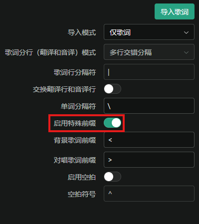
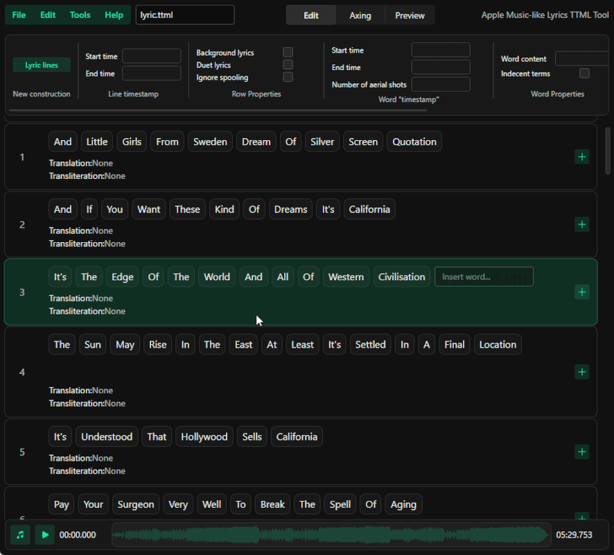
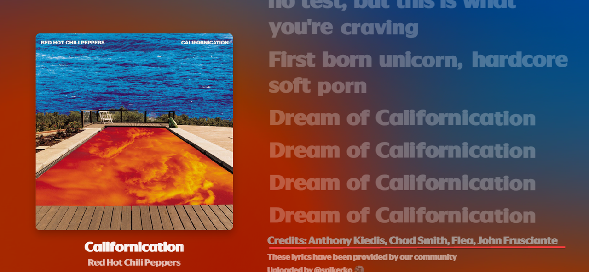

Step-by-step guide for creating word-by-word synced lyrics for Spicy Lyrics
Made by @roranfeed, @tx24, @Spikerko
Warning
Do not use AI or any other "Spicy Lyrics non-verified tool" to make or modify TTML files.
We will use AMLL TTML Tool Fork by Streetle
1. Upload a song
Tip
- You can download a song here.
- You can also adjust the volume and playback speed by hovering over the icon.
2. Prepare the lyrics
- Click on the little search icon at the top-right corner of the input box.
- Enter the song link and click search
- Click on the arrow to process if it hasn't already
- Copy the output
Important
If you don't find any lyrics, try searching with LRCLIB (which often has more songs).
3. Import the lyrics
Important
Make sure to have this switch enabled. 
4. Switch to the "Sync Mode" tab, select the first word and sync!

Main keybinds:
- F - sets the start time of the word
- G - sets the end time of the word and the start of the next word (if the performer sings without pauses)
- H - sets the end time of the word (if there is a pause before the next word)
- A/D - switches words left/right
- Left arrow/right arrow - rewind/fast forward the audio by 5 seconds
Tip
- You can edit the text and add new lines in the Edit tab
- If the singer sings too fast, reduce the playback speed by hovering over the musical note icon
- It is VERY IMPORTANT to have the lowest possible audio latency, as this is important for accuracy (the lowest latency is achieved by using a wired connection, if available, for the audio device you are using)
- You can make a line a background line by selecting the line and checking "Background Vocal" in "Line Properties" under "Edit Mode"
- You can do the same for a second singer by checking "Duet Vocal"
This is a fairly lengthy process and requires exceptional precision, but here is a brief description of the process:
1. Play the song, and when you hear the beginning of a word, press F and G (or H) when the next word begins.
This is an approximate demonstration of how it works.
2. Process the line and double-check the
synchronization for errors, then move on to the next line.
3. When you have finished synchronizing, perform a
final check and proceed to the next step.
5. Export the lyrics
6. Adding song writers
If you want to see the "Credits" at the end of the lyrics container in
Spicy Lyrics, you need to mention the song writers.
And to do that, put this into the
<metadata> element (after the tt
agents):
<iTunesMetadata xmlns="http://music.apple.com/lyric-ttml-internal" leadingSilence="0">
<translations/>
<songwriters>
<songwriter>John Doe</songwriter>
<songwriter>Jane Doe</songwriter>
<songwriter>John Nolan</songwriter>
</songwriters>
</iTunesMetadata>Note
Replace John Doe, Jane Doe and John Nolan with the actual song writers.
Warning
Each song writer must be added individually.
Tip
You can find the song writers on Spicy Lyrics if you scroll to the end of
the song lyrics. 
7. Checks and Uploading
Enable "Dev Mode" in the extension's settings and upload your TTML file by clicking on the "<>" button at the bottom of the lyrics page, then click on "Upload" and select the file.